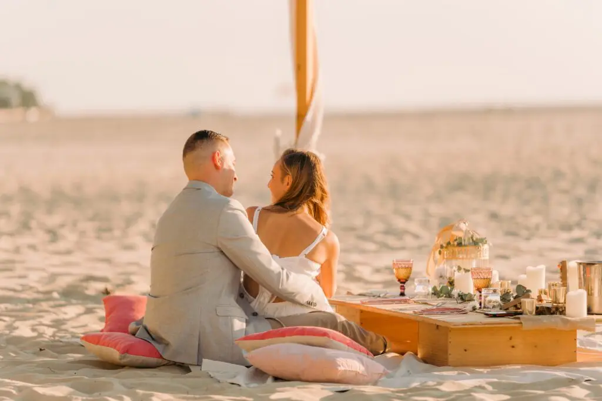
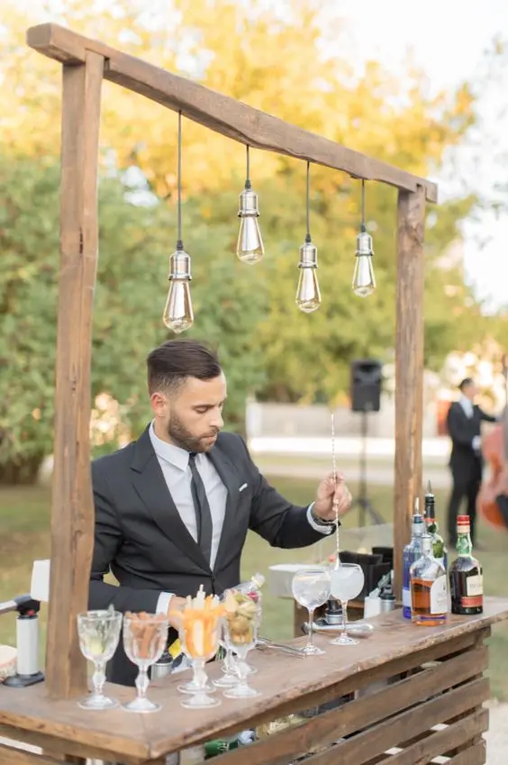
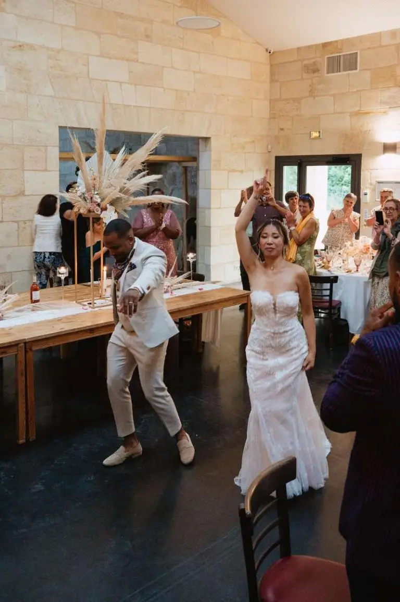
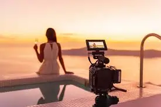
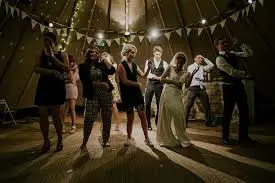
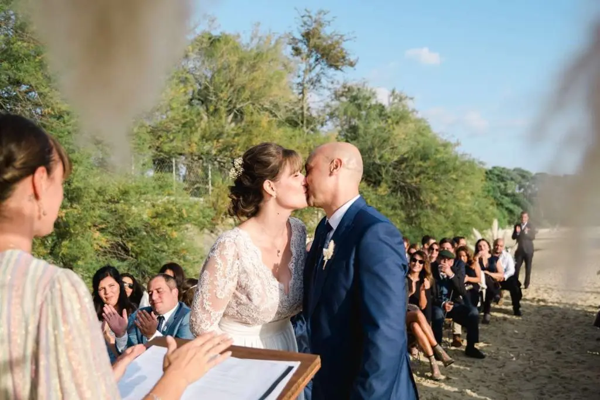

Le mariage est l’un des événements les plus importants et émouvants de la vie d’un couple. C’est une journée remplie de moments magiques, de rires, de larmes de joie, et de souvenirs inoubliables. Pour immortaliser ces instants précieux, de nombreux couples choisissent aujourd’hui d’engager des vidéastes professionnels. Contrairement aux photographies qui capturent des moments figés, les vidéos de mariage offrent une vision dynamique et complète de la journée, permettant aux mariés de revivre chaque détail de leur célébration.
Quelle est l’importance des vidéastes de mariage ?
Créer des souvenirs vivants
Les vidéos de mariage permettent de revivre les moments les plus précieux de votre journée spéciale avec une profondeur et une richesse d’émotions que les photos ne peuvent égaler. Alors que les photos capturent des instants figés, les vidéos enregistrent l’ensemble des événements, des préparatifs du matin aux festivités de la soirée, en passant par les vœux échangés et les discours émouvants. Cette dimension vivante et dynamique donne une nouvelle vie aux souvenirs, permettant aux mariés de revivre non seulement ce qu’ils ont vu, mais aussi ce qu’ils ont entendu et ressenti.
Les détails capturés
Les vidéastes professionnels sont experts dans l’art de capturer les petits détails qui rendent chaque mariage unique. Des regards échangés entre les mariés aux sourires des invités, en passant par les larmes de joie des parents et les éclats de rire des amis, ces moments précieux sont immortalisés en vidéo. Ces détails ajoutent une profondeur émotionnelle à votre souvenir, rendant chaque visionnage de la vidéo de mariage une expérience émotionnelle et immersive.
Les émotions à l’état pur
Les émotions sont au cœur de chaque mariage. Un vidéaste de mariage capture ces émotions brutes et spontanées avec une authenticité que seules les images en mouvement peuvent transmettre. Que ce soit le regard ému du marié en voyant sa future épouse pour la première fois, les larmes de joie des parents, ou les éclats de rire pendant les discours, ces moments sont précieux et méritent d’être immortalisés. Les vidéos permettent de revivre ces instants encore et encore, avec la même intensité émotionnelle que le jour de l’événement.
Les moments spontanés
Les vidéastes sont également doués pour saisir les moments spontanés qui se produisent tout au long de la journée. Qu’il s’agisse d’un enfant qui joue innocemment, d’un invité qui fait un discours improvisé ou d’une danse inattendue, ces moments imprévus ajoutent du caractère et de la joie à votre vidéo de mariage. Ces instants spontanés sont souvent ceux qui apportent les plus grands sourires lors des futurs visionnages.
Quels sont les avantages d'une vidéo de mariage ?

Une perspective complète
Alors qu’un photographe se concentre sur des moments clés et des poses spécifiques, un vidéaste capture l’ensemble de l’événement. De la préparation du matin à la soirée dansante, chaque instant est enregistré, offrant une perspective complète de la journée. Cette approche holistique garantit que même les petits détails, souvent oubliés, sont préservés.
L'ensemble de la journée
Une vidéo de mariage documente l’intégralité de la journée, des préparatifs des mariés à la fin de la soirée. Cela inclut non seulement les moments clés comme la cérémonie et les discours, mais aussi les petits moments entre les deux, comme les discussions informelles entre les invités, les préparatifs dans les coulisses, et les moments de calme et de réflexion. Cette capture complète de la journée permet de revivre chaque aspect du mariage, offrant une image globale de l’événement.

La possibilité de partager facilement
Dans notre ère numérique, partager des souvenirs est plus facile que jamais. Une vidéo de mariage peut être partagée avec des amis et de la famille à travers les réseaux sociaux, les plateformes de partage de vidéos, ou même via des DVD ou des clés USB. Pour ceux qui n’ont pas pu assister à la cérémonie, une vidéo offre une chance de vivre l’événement presque comme s’ils y étaient.
Accessibilité et partage
Les plateformes de partage en ligne comme YouTube, Vimeo, et les réseaux sociaux permettent de diffuser facilement la vidéo de mariage à un large public. Vous pouvez également envoyer des copies numériques à vos proches, ce qui est particulièrement utile pour ceux qui n’ont pas pu assister à la célébration en personne. Le partage de la vidéo permet de prolonger la joie du mariage et de la partager avec ceux qui comptent le plus pour vous.


Un souvenir durable
Une vidéo de mariage est un souvenir durable qui peut être apprécié pour les années à venir. Contrairement aux souvenirs qui s’estompent avec le temps, une vidéo permet de revivre les moments spéciaux avec la même vivacité que le jour où ils ont été capturés. Elle devient une archive familiale précieuse, à regarder lors des anniversaires ou des réunions de famille, et à transmettre aux générations futures.
Un héritage familial
Une vidéo de mariage ne se contente pas de documenter un jour spécial ; elle devient un héritage familial. Vos enfants, petits-enfants, et les générations suivantes pourront regarder la vidéo et se sentir connectés à leur histoire familiale. C’est un trésor intemporel qui préserve non seulement les images et les sons, mais aussi l’essence de qui vous étiez à ce moment-là.

Comment choisir le bon vidéaste de mariage ?
Rechercher des professionnels expérimentés
Le choix d'un vidéaste de mariage ne doit pas se faire à la légère. Il est essentiel de rechercher des professionnels expérimentés, avec un portfolio solide et des références positives. Prenez le temps de visionner plusieurs de leurs vidéos précédentes pour vous assurer que leur style correspond à vos attentes. Les vidéastes de mariage peuvent avoir des styles très différents – du documentaire au cinématographique – il est donc crucial de trouver celui qui saura raconter votre histoire de la manière la plus authentique.

Styles de vidéastes
Les vidéastes de mariage peuvent adopter différents styles, chacun offrant une perspective unique sur votre journée spéciale. Certains préfèrent un style documentaire, capturant les événements tels qu'ils se déroulent de manière naturelle et spontanée. D'autres optent pour un style cinématographique, avec des plans soigneusement composés, des mouvements de caméra artistiques et une narration structurée. Il est important de choisir un vidéaste dont le style résonne avec votre vision du mariage.
Vérifier les avis et recommandations
Les avis et recommandations d'autres couples peuvent être extrêmement utiles dans votre recherche. N'hésitez pas à consulter les témoignages en ligne et à demander des recommandations à vos amis ou à votre famille. Un vidéaste avec de nombreux avis positifs et des recommandations personnelles est généralement un bon signe de fiabilité et de compétence.


Témoignages et échantillons
En plus de lire les avis, demandez à voir des échantillons de travail antérieur. Les vidéastes professionnels devraient être en mesure de vous fournir des extraits de leurs vidéos précédentes. Cela vous donnera une meilleure idée de leur style, de leur qualité de travail, et de leur capacité à capturer les moments importants.
Rencontre et communication
Avant de finaliser votre choix, rencontrez le vidéaste en personne ou organisez une visioconférence. Cette rencontre est l'occasion de discuter de vos attentes, de vos préférences, et de vous assurer que vous êtes à l'aise avec la personne qui sera à vos côtés tout au long de cette journée spéciale. Une bonne communication est essentielle pour garantir que le vidéaste comprenne parfaitement vos souhaits et puisse les mettre en œuvre de manière efficace.
Questions à poser
Lors de votre rencontre avec le vidéaste, posez des questions sur leur processus de travail, leur équipement, et leur disponibilité le jour du mariage. Discutez de vos attentes et de tout moment spécifique que vous souhaitez capturer. Une communication claire dès le départ garantit que tout le monde est sur la même longueur d'onde et aide à éviter les malentendus le jour du mariage.
Mes petits conseils pour une vidéo de mariage réussie !

Planifiez les moments clés
Discutez avec votre vidéaste des moments clés que vous souhaitez absolument voir dans la vidéo. Cela peut inclure la cérémonie, les vœux, les discours, la première danse, et d’autres moments spéciaux. Une bonne planification permet au vidéaste de se préparer et d’être prêt à capturer ces instants sans les manquer.

Timing et coordination
Assurez-vous que votre vidéaste est informé du timing de chaque événement important. Coordonnez avec votre planificateur de mariage et les autres prestataires pour garantir que tout se déroule sans accroc. Plus votre vidéaste est préparé, plus il sera capable de capturer chaque moment clé avec précision.

Soyez naturels
Il est important de rester naturel et détendu devant la caméra. Les meilleures vidéos de mariage sont celles où les couples et les invités sont eux-mêmes, sans essayer de jouer un rôle. Faites confiance à votre vidéaste pour capturer les moments authentiques et ne vous inquiétez pas trop de la caméra.
Confort devant la caméra
Si vous n’êtes pas habitué à être filmé, prenez le temps de vous détendre et de vous habituer à la présence de la caméra. Parlez avec votre vidéaste de vos inquiétudes et écoutez leurs conseils pour rester naturel. Plus vous serez à l’aise, plus les images seront authentiques et émouvantes.

Préparez les lieux
Assurez-vous que les lieux de votre mariage sont bien préparés pour la capture vidéo. Une bonne lumière et un environnement bien organisé peuvent faire une énorme différence dans la qualité de la vidéo. Discutez avec votre vidéaste des meilleurs angles et des points de vue à privilégier.
Optimisation de l'éclairage
L’éclairage est un élément crucial pour la qualité de la vidéo. Travaillez avec votre vidéaste et votre planificateur de mariage pour optimiser l’éclairage des lieux. Que ce soit en intérieur ou en extérieur, un bon éclairage mettra en valeur les détails et les émotions capturées par la caméra.

Intégrer des éléments personnels
Pour rendre votre vidéo de mariage unique, pensez à intégrer des éléments personnels et des touches spéciales. Cela peut inclure des messages enregistrés de vos proches, des plans de lieux significatifs pour vous deux, ou des activités spéciales prévues pour le jour du mariage.

Créativité et personnalisation
Discutez avec votre vidéaste des moyens de personnaliser votre vidéo. Que ce soit à travers une musique spécifique, des séquences de drone, ou des interviews de vos invités, ces touches personnelles rendront votre vidéo encore plus spéciale et représentative de votre couple.

En bref, les vidéastes de mariage jouent un rôle essentiel dans la création de souvenirs durables et vivants. Ils apportent une dimension unique en capturant non seulement des images, mais aussi des sons et des émotions qui font de chaque mariage un événement unique et mémorable. En choisissant le bon professionnel et en planifiant soigneusement votre journée, vous pouvez être sûr que votre vidéo de mariage sera un trésor que vous chérirez pour les années à venir. Les photos sont précieuses, mais une vidéo vous permet de revivre votre mariage encore et encore, avec le sourire aux lèvres et le cœur rempli de joie. Avec une vidéo de mariage, chaque regard, chaque sourire, et chaque parole sont immortalisés, vous permettant de revivre l’intensité et la beauté de votre journée spéciale pour les années à venir.

En bref...
Les vidéastes de mariage jouent un rôle essentiel dans la création de souvenirs durables et vivants. Ils apportent une dimension unique en capturant non seulement des images, mais aussi des sons et des émotions qui font de chaque mariage un événement unique et mémorable. En choisissant le bon professionnel et en planifiant soigneusement votre journée, vous pouvez être sûr que votre vidéo de mariage sera un trésor que vous chérirez pour les années à venir. Les photos sont précieuses, mais une vidéo vous permet de revivre votre mariage encore et encore, avec le sourire aux lèvres et le cœur rempli de joie. Avec une vidéo de mariage, chaque regard, chaque sourire, et chaque parole sont immortalisés, vous permettant de revivre l’intensité et la beauté de votre journée spéciale pour les années à venir.